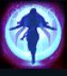

Aphelios
| Aphelios The Weapon of The Faithful | |
|---|---|
| Release date | 11.12.2019 |
| Class | Marksman |
| Positions | Bottom |
| Resource | Mana |
| Range type | Ranged |
| Adaptive type | Physical |
| Base statistics | |||
| Health | 530 – 2026 | Mana | 348 – 1062 |
| Health regen. | 3.25 – 12.6 |
Mana regen. | 6.5 – 13.3 |
| Armor | 28 – 79 | Attack damage | 57 – 97.8 |
| Magic resist. | 26 – 34.5 | Crit. damage | 175% |
| Move. speed | 325 | Attack range | 550 |
Ieșind din umbra Lunii gata de luptă, Aphelios ucide vrăjmașii credinței sale într-o liniște mormântală, lăsând armele să vorbească în locul lui. E alimentat de o otravă care îl lasă fără glas și călăuzit de sora lui, Alune. Din sanctuarul ei îndepărtat, aceasta îi așază în mâini un întreg arsenal de arme făurite din piatra lunii. Atâta vreme cât Luna strălucește deasupra lui, Aphelios nu e niciodată singur. |  |
ASASINUL ȘI CLARVĂZĂTOAREA Aphelios mânuiește cele 5 arme ale lunarilor create de sora sa, Alune. Are acces la două în același timp: una principală și una secundară. Fiecare armă are un atac de bază și o abilitate activată, ambele unice. Atacurile și abilitățile consumă muniție. Când rămâne fără muniție, Aphelios renunță la armă, iar Alune o invocă pe următoarea dintre cele 5. |
||
|---|---|---|---|---|
ABILITĂȚILE ARMELOR Aphelios are 5 abilități activate diferite, în funcție de arma echipată: ''Calibrum'' (pușca): o lovitură la distanță mare, care însemnează ținta pentru un alt atac la distanță mare; ''Severum'' (pistolul-coasă): alergi repede în timp ce ataci inamicii din apropiere cu ambele arme; ''Gravitum'' (tunul): țintuiești toți inamicii încetiniți de această armă; ''Infernum'' (aruncătorul de flăcări): lovești inamicii dintr-o zonă în formă de con și îi ataci cu arma secundară; ''Crescendum'' (arma chakram): trimiți o santinelă care trage cu arma secundară. |
||||
FAZĂ Aphelios comută la arma secundară, înlocuindu-și atacul de bază și abilitatea activată. |
||||
 |
LISTA ARMELOR Aphelios nu are o a treia abilitate. Acest slot afișează următoarea armă pe care i-o va da Alune. La început, ordinea armelor este fixă, dar aceasta se poate modifica de-a lungul jocului – când o armă rămâne fără muniție, ajunge la sfârșitul listei. |
|||
 |
PRIVEGHIUL LUNII Lansează un fascicul concentrat de lumină selenară, care explodează când lovește un campion inamic. Aplică efectul unic al armei principale a lui Aphelios. |